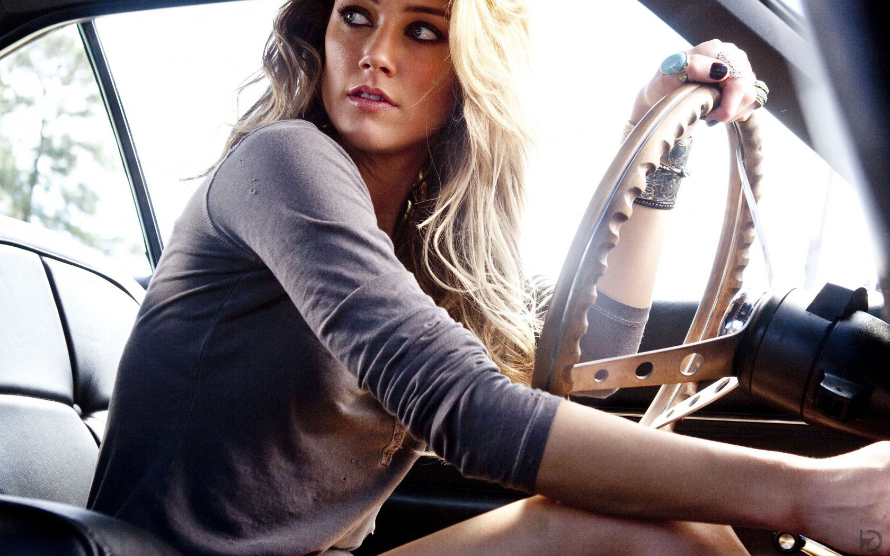

My photo collection with detail hollywood zone
-
collection-1
The history of photography has roots in remote antiquity with the discovery of the principle of the camera obscura and the observation that some substances are visibly altered by exposure to light. 
place-2
The commercial introduction of computer-based electronic digital cameras in the 1990s soon revolutionized photography. During the first decade of the 21st century, traditional film-based photochemical.- 
image-3
Around the year 1800, Thomas Wedgwood made the first known attempt to capture the image in a camera obscura by means of a light-sensitive substance. He used paper or white leather treated with silver nitrate.

Hollywood-1
Talbot's early silver chloride "sensitive paper" experiments required camera exposures of an hour or more. In 1840, Talbot invented the calotype process, which,-
Type-2
The daguerreotype proved popular in response to the demand for portraiture that emerged from the middle classes during the Industrial Revolution -
Movie wallpaper
By 1849, images captured by Levitsky on a mission to the Caucasus were exhibited by the famous Parisian optician Chevalier at the Paris Exposition

X-Men1
The following is a list of cast members who have portrayed characters appearing in the X-Men film series, based upon the comic books of the same name. Hugh Jackman appeared in the first seven films:-
Iron men-1
When an industrialist is captured, he constructs a high-tech armoured suit to escape. Once he manages to escape, he decides to use his suit to fight against evil forces and save the world. 
Iron men-2
Tony Stark is under pressure from various sources, including the government, to share his technology with the world. He must find a way to fight them while also tackling his other enemies.